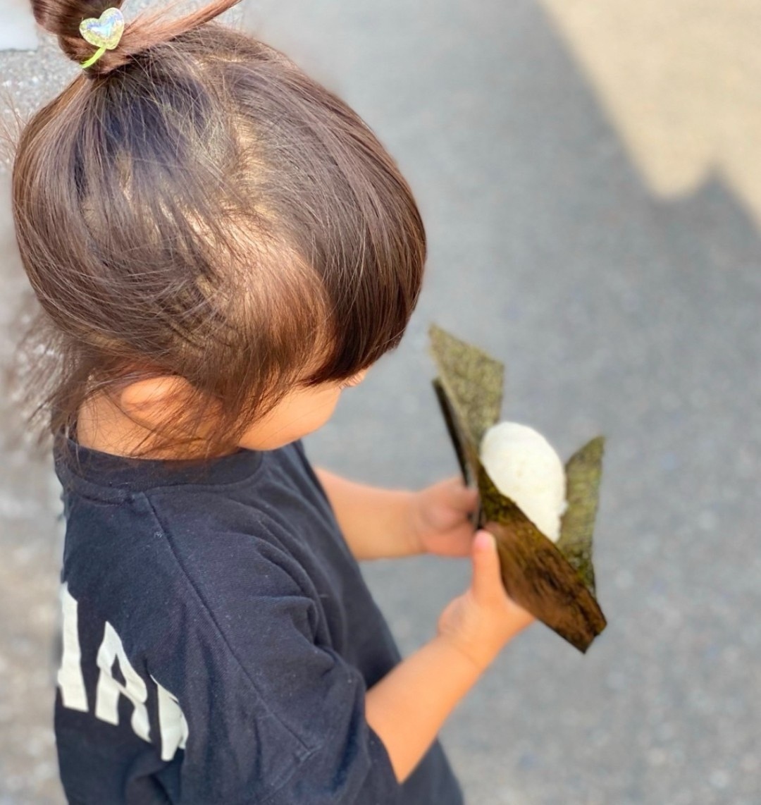

SCROLL
かなむすび(キッチンカー)
活動開始: 2020年9月
主な活動地: 遠賀郡・宗像市・北九州市
「心を込めて握る、愛情たっぷりのおむすび」をモットーに、
厳選された地元食材で一つひとつ丁寧に手作りしています。
定番から季節限定まで豊富なバリエーションと、
お飲み物やサイドメニューも充実。
１つ１つ丁寧に釜炊きされた、ミネラル豊富な『宗像大島の塩』と、 厚みをオリジナルに調整した有明産海苔を使用しています。
特徴: 地元遠賀郡の食材を使用、手作りおむすび専門、移動販売
↑Click!!